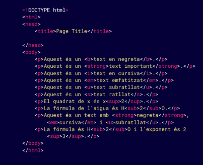

En HTML podemos dar formato al texto con etiquetas. Algunas lo ponen en negrita <'b>/<'strong> o cursiva <'i>/<'em>; otras lo subrayan <'u'>, lo tachan <'strike>/<'s> o colocan letras más arriba <'sup> o más abajo <'sub>.
Por ejemplo, <'strong> marca un texto como importante y normalmente lo muestra en negrita. <'em> indica énfasis y suele mostrarse en cursiva. <'sup> sirve para escribir un número elevado, como en una potencia, y <'sub> para ponerlo abajo, como en algunas fórmulas químicas.
En el ejemplo, las etiquetas se escriben antes y después del texto que queremos cambiar. Por ejemplo, <'strong>importante<'/strong> marca la palabra “importante”.

<'b> y <,i> cambian la apariencia a negrita y cursiva, mientras que <'strong> y <'em> también dan significado al texto. Para el texto tachado, hoy suele preferirse <'s> cuando ya no es válido o relevante; <'strike> está obsoleta.